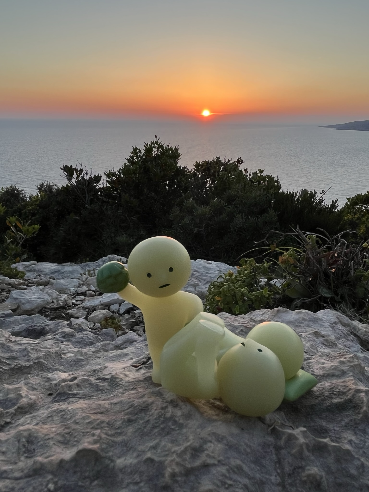

hi mom,
it’s smark reporting today. objectively we didn’t do that much today but it was one of the most memorable so far.
the main course for today was the private boat rental from keri. we had done some asking around two days ago so we chose the boat service that we liked the most and asked for the three hour rental with a skipper. our guide was makis and he was a really chill guy with below average english, but we still got along well and had a blast. here’s him and gramps together:
makis first took us along the coast to laganas, where we drove around the port that we explored the day before. he told us that because there were so many fisher boats there and therefore lots of live bait, the turtles like to congregate there and we’d most likely be able to see one. alas, we saw a massive loggerhead come up for air three times; each time, makis would say, “come up! come up!” and we would hear a small splash and a raspy gasp for air, and then everyone in the immediate area would clap. here’s what it looked like:

then, he took us to marathonisi, known as turtle island. here you can see that distinctive shape behind me:
the island itself was very pretty, and makis docked us at the beach so that we could all get off the boat and enjoy the sand. unfortunately the rocks on the beach haven’t yet been whittled to sand so it was quite a painful experience.

next makis drove the boat farther along the coast, where we passed through caves and arches even bigger than the ones we saw the first day. the water was so amazingly blue, and we just kept darting in and out; it seemed like makis would never stop.


i’m not sure if the pictures do it justice. we went to so many beautiful parts of the coast in those short three hours, and the whole experience was amazing. smike especially liked riding the boat.
some bonus footage (including my favorite family photo so far):

afterward we went to a new place for lunch (appropriately called taverna keri) and got some more great greek fare. at this point, we’ve pretty much had everything at least once, so we just ordered our favorites again (saganaki, neapoliten, lamb). interestingly, instead of free dessert like usual, they gave us cinnamon liqueur. we’re all underage, so we just let dad try it.
edit: it just tasted like sweeter fireball lolol
edit 2: also, since smark isn’t gonna say it himself, he had some to taste and got a lil tipsy
after a short nap back at the villa, we embarked again for our last segment of activity here on zakynthos: first we stopped by the olive press museum, the signs for which we had seen all over the island the last couple days. it was a little underwhelming but we still bought some soap and learned about the two types of olive trees (that we have unfortunately forgotten already).
the main attraction for the afternoon was the horse riding. sadly dad said that we’re not old enough to ride our own yet so we had to just stay in the car today. but i got pretty close, if i do say so myself:
dad also showed us some pics afterwards. they walked through a forest and then along the coast in the sand before making a loop back to the forest. he got the docile white one that had no issues pooping while walking, which we found hilarious. auntie’s was too tall and scared her a couple times, and gramps’ was a pervert and kept smelling auntie’s ride’s butt. grandma’s was just slow. overall dad liked the experience and wishes he could’ve told the horse to go faster.

once we got back in the car, it was 7 and we decided to go to a random beach on the west coast for the sunset. we didn’t do any research beforehand, so i thought it would be weird, but the road leading to it turned out to have a beautiful view of the water and cliffs. this was not a traditional beach and was more like a cliff lookout point, so grandma, dad, and we followed a steep rocky path down the face of the cliff as far down as we could. however, due to the impending sunset we had to return before we reached the end, and we still had about 50 meters of elevation to go.
we then all went to a nice secluded area near the parking lot and enjoyed the beautiful sunset over the water. this is the first one that we spent as an entire family, so it was rly meaningful in my honest opinion.
and here’s dad being silly.
on the way home we got some food (pizza mostly) but what was most interesting was that the supermarket was selling the ice cream a la carte. i think you would’ve liked it.
that pretty much wraps up our last day on zakynthos. i had a rly good time here and i know everyone else did too. miss you, mom.
love,
smark (and others)